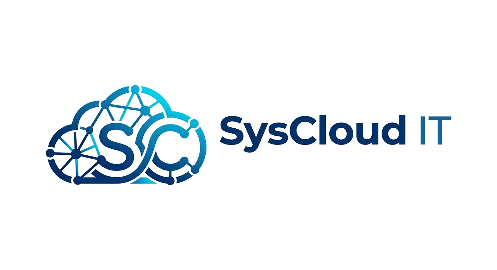

Accueil - SysCloud IT
Bienvenue sur SysCloud IT 👋

📂 Sommaire Général
Le thème génère automatiquement le menu à gauche, mais voici les grandes sections à explorer :
 1. Microsoft 365
1. Microsoft 365
- Accéder à la section Systèmes & Linux : Retrouvez mon guide de configuration Zorin OS et mes mémos de post-installation.
 2. Microsoft Azure
2. Microsoft Azure
- À venir : Déploiement/Configuration de solution Microsoft Azure
☁️ 3. Microsoft Intune
- À venir : Déploiement/Configuration de Microsoft Azure.
🌐 4. Sophos Firewall
- À venir : Tuto sur solution Sophos XGS
4. TroubleShoot
- À venir : Résolution d’erreur windows
💡 Astuce : Utilise la barre de recherche en haut à gauche du menu pour retrouver instantanément un mémo ou une commande spécifique !